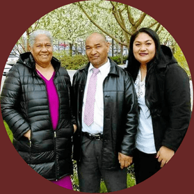

"Bake With Love"
Motivated by love
Keke" and "Pai" was the main reason that inspired me to start the "Best Curry Ever take-out." "Keke" and "Pai" are our family's desserts back on the Island of Tonga. Since we moved here to the States, there were times I noticed my parents craved the keke. "Pai" was okay because I got the recipe from my Grandmother. I can make it easy whenever my parents crave it. But the "Keke" we usually buy it, but it doesn't taste how we like it. So, I was motivated to make it from scratch to the point I mastered it. I got the curry recipe from my Mother. She always loved it when I made it for her. 'Otai is our family's favorite drink of all time.

My Inspiration
My parents are my great inspiration in learning how to cook these meals. I am so grateful for them. I gained these incredible experiences because of them. Because my parents enjoy these foods so much, I knew that some people out there must have craved them too, especially the Polynesian people, so I started selling them. I hope everyone who came and those who might stop by will enjoy these meals. I was touched by love to bake and cook what my parents love to eat. So, It is a privilege to share this food with the world. These great inspirations became my talents. Something that I love to do. It makes me happy when I see the customers enjoy their meals.
